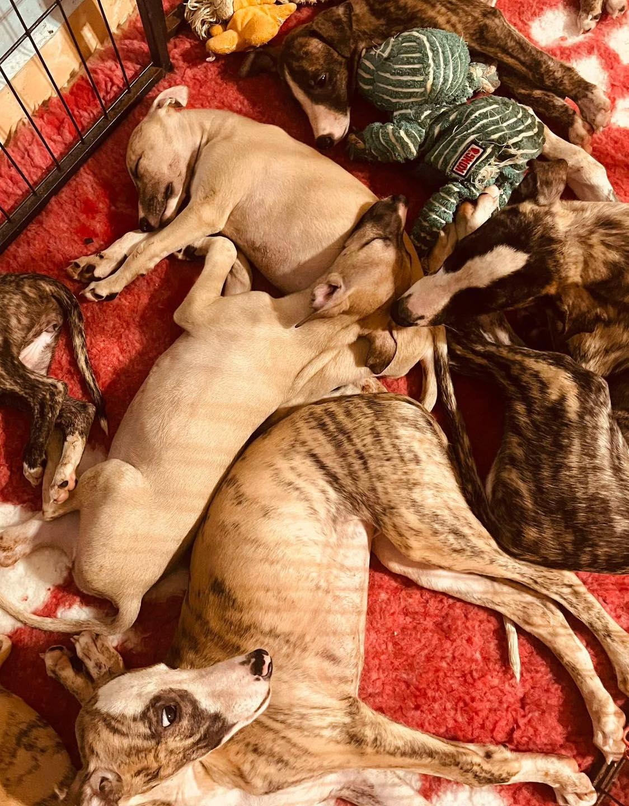
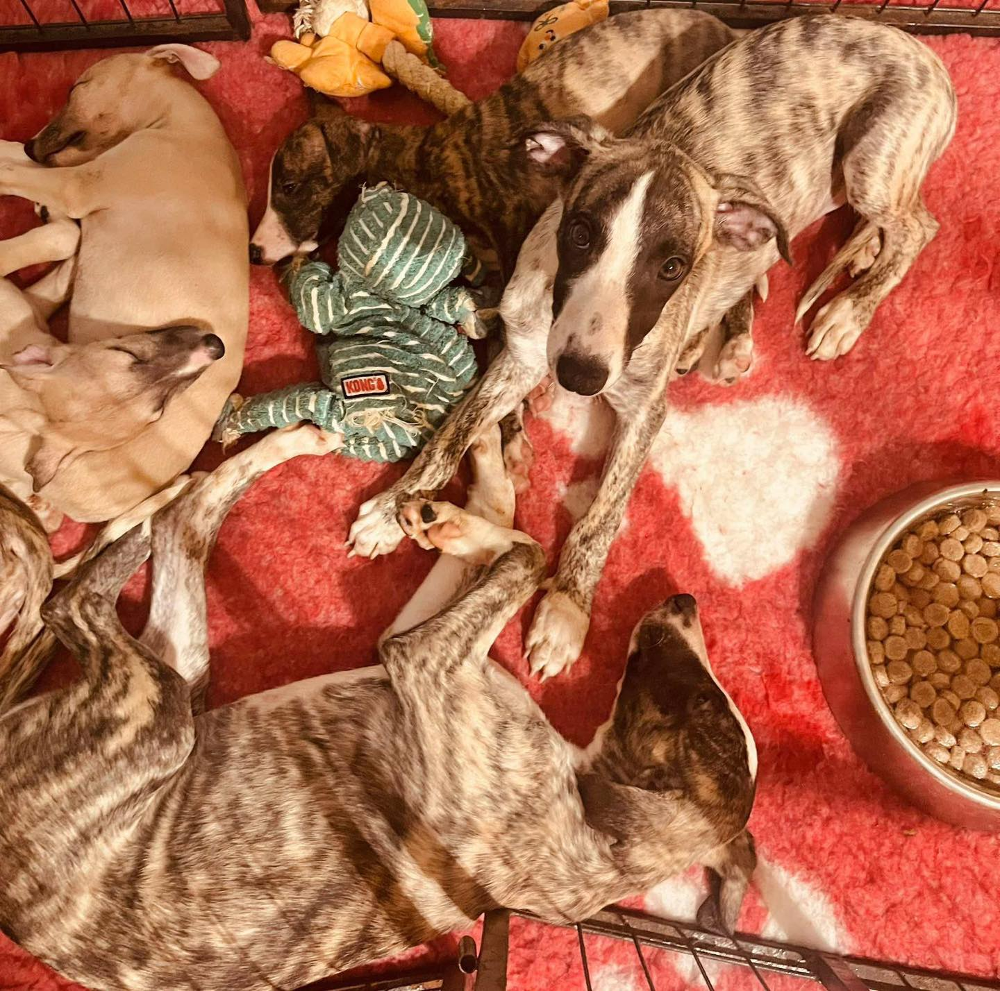
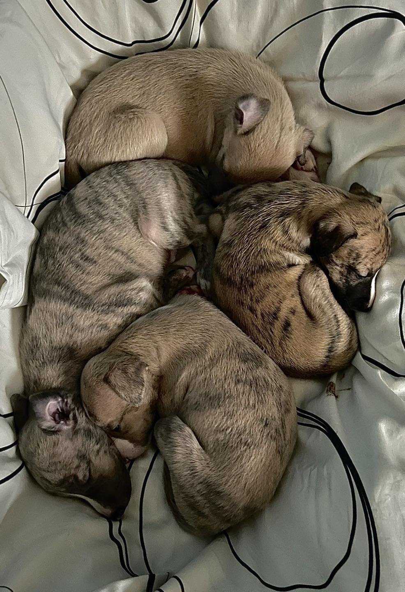
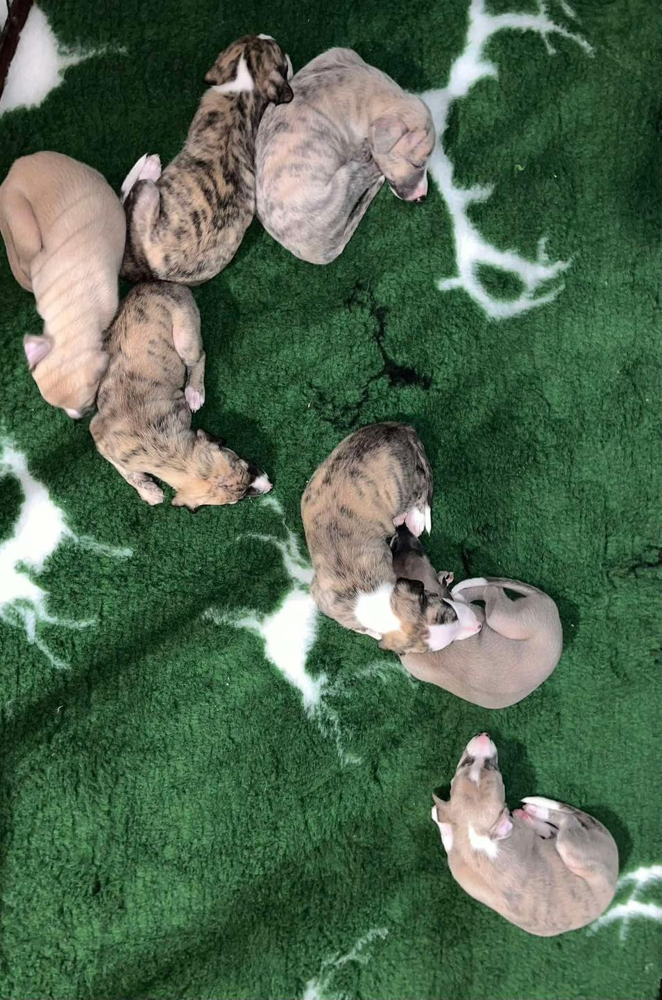

Rólunk
Kutyákkal nőttünk fel, számunkra mindig természetes volt, hogy a család részei: hű társak, akik mellett felnőttünk, és akikkel megosztottuk a mindennapok minden örömét.
Gyerekkorunkban is mindig volt mellettünk négylábú barát, így nem csoda, hogy felnőttként is hiányzott ez a különleges kötődés.
Évekkel ezelőtt rátaláltunk egy whippet-gazdi blogra, ahol az író olyan szeretettel és harmóniával élt együtt kutyáival, hogy ez mély nyomot hagyott bennünk. Akkor döntöttük el: egyszer mi is szeretnénk ilyen kapcsolatot megélni.
Amikor végre kertes házba költöztünk, eljött a pillanat, hogy megkeressük azt a fajtát, amely az életmódunkhoz és a szívünkhöz is illik. Olyan kutyát szerettünk volna, aki kedves, szerethető, ragaszkodó, de nem igényel állandó pörgést; aki nem túl szőrös, aki képes alkalmazkodni, és ha szükséges, nyugodtan elvan egyedül is.
Így találtunk rá a whippetekre és az ausztrál juhászokra - két különleges fajtára, amelyek bár különbözőek, egy közös bennük: mindkettővel meg lehet élni a feltétel nélküli szeretetet, a tiszteletet, és azt a különlegesen mély köteléket, amely bennünket a kutyák világához köt.
Kennelünk célja egyszerű: szeretetteljes, harmonikus környezetben nevelni egészséges, kiegyensúlyozott, emberközpontú kutyákat, akik új családjuknak is ugyanannyi örömöt adnak majd, amennyit nekünk adnak nap mint nap.
Tenyészcéljaink
Célunk az hogy a kutyáink egy szeretetteljes családi környezetben nőjenek fel és később családtagok legyenek leendő gazdáiknál.
Emellett fontos számunkra a fajták egészségének, temperamentumának és képességeinek megőrzése is.
- Családtaggá válás
- Egészségmegőrzés
- Fajta standardok betartása
Kennelünk pillanatai
Pár csendéleti kép előző almokról.




Miért szeretjük a Whippetet?
Egy sportos de könnyen elfáradó családi kutya, aki imádja a simogatást és a közös időtöltést.
Miért szeretjük az Ausztrál juhászt
Egy rendkívül inteligens pörgős kutya, aki imádja a kihívásokat és a közös munkát a gazdival.